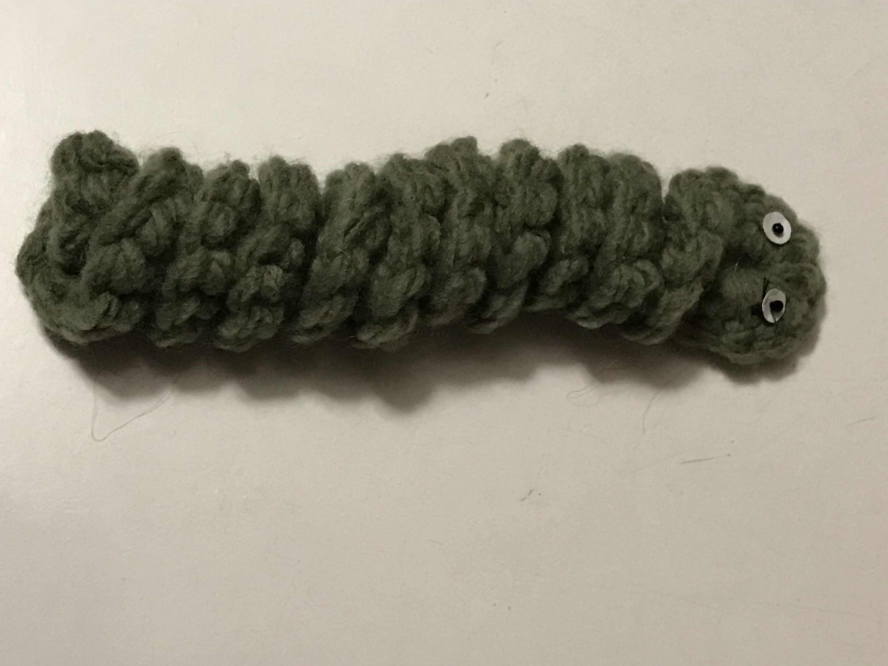
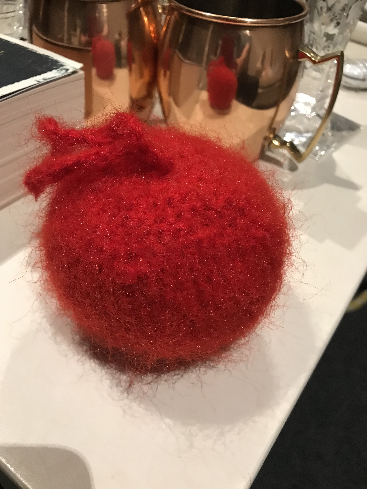

This bunny was fun and easy to make. It was a bit longer of a project and there was a couple of things I hadn’t done before- attaching arms and ears and working up from legs- but nonetheless it was very enjoyable to do and it produced a final cute bunny plush! I plan to remake it in all sorts of colours and designs to make cut little gifts for friends and family.
Last time I checked, at the making of this website, the pattern is pinned at the top of the page.
Log Cabin Blanket
I haven’t quite finished this project yet, as it is more of a long one. But, this mindless rochet project is quite fun to zone out and repeat the same pattern over and over while on a long trip or watching tv. This project is good to do if you need to keep your hands busy, and once you’re done, you’ll have a nice warm blanket! There is also no limit to how large, or small, you can make it. You can also experiment with all the different colour patterns.
You can find this pattern by Hooked By Robin here.
Minecraft Creeper
I found this pattern while looking for one to make for my younger cousin as he is very into Minecraft at the moment. I found it very quick to make, finishing almost half of it in an afternoon. I did find a couple of the steps in each round a bit weird so I stopped doing them, and I didn’t use the mesh plastic panels so my creeper is a bit rounder, but besides that it still looks like the loveable Minecraft creeper.
I did this pattern on a bit of a whim, with nothing else to do. I found it fun and it created a cute little blueberry. I didn’t add the eyes because I don’t own safety eyes, but nonetheless I love it. I found the ruffles a but tricky to get a hand of at first, but soon enough I understood it.
I found this pattern on Instagram by the account @melzcrochet
You have to scroll down a bit to find this pattern but not too much.
Worry Worm

I tested this pattern for my grandma, and it was very quick and simple to complete. Once completed, it was fun to fiddle around and play with as a fidget toy.
You can find this pattern by Hooked By Robin here.
Star Pouch
I came across this pattern and had a lot of fun trying it out. I had never made a granny square before, so I had no idea what I was doing. But I found this tutorial very easy to follow and understand. I love the outcome, and I plan to make more pouches with different colour patterns.
You can find this pattern by Katelyn on YouTube.
Christmas Bauble

This pattern is included in the DK A little course in… Crochet, labelled ‘Toy Balls’, but I added a loop of string at the top so I could hang it up on a Christmas tree. This pattern is simple and fun, and a good practice for starting magic rings and closing them off. I made a few of these, starting off not knowing magic rings and finishing being very confident in magic rings. I recommend this pattern to beginners or for people who want to get more confidence in magic rings.
Mini Garland
This pattern is fun and good to do if you have the end of a ball of yarn that isn’t long enough to make a larger project. You can stop this project at any time, making it as long as you want. The final product is a cute decoration that you can hang up around the house. I made this originally to put up as a Christmas decoration.
I found this pattern on Instagram by the account @piskorzanki
You’ll scroll down for a while to find this pattern as it is from a while ago.
Mini Star
I made a lot of this pattern. It is a good pattern for practicing magic rings and sewing together sides. The final product is a cute star that you can put anywhere. I didn’t add the eyes, instead adding a loop of string and hanging it up on my Christmas tree. This pattern is fun to experiment with different colours and types of yarn.
I found this pattern on Instagram by the account @aradiyatoys
You’ll have to scroll down a lot to find the pattern as it is from a while ago.